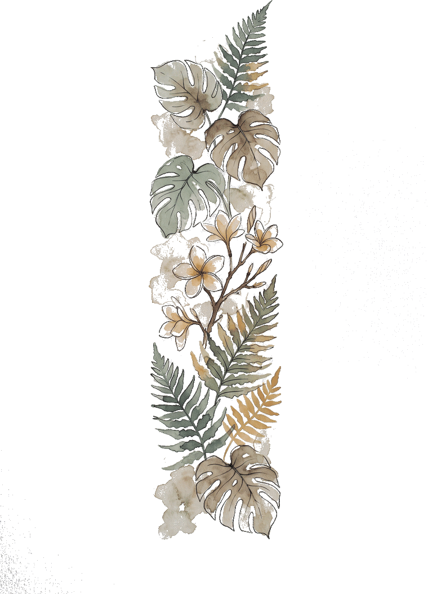
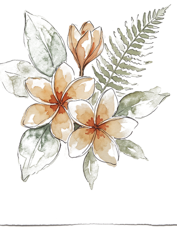

Designer / Creator / AI Educator / Founder @ Singapore
100%
Drag the page to turn · Drag the glass across it
About
Meng To is a designer, creator, and AI educator based in Singapore. He is the founder of Design+Code, where for over a decade he has taught designers and developers to build real apps — from Sketch and Xcode through SwiftUI, and now the AI tools that let one person ship what used to take a team. His work lives on the seam between craft and code: teaching designers to build, and builders to see. This sketchbook is the other half of that — the city looked at slowly, in ink and a little colour: shophouse shutters, hawker tents, the bay at dusk.

Plates
Singapore · Sketchbook · hello@mengto.com